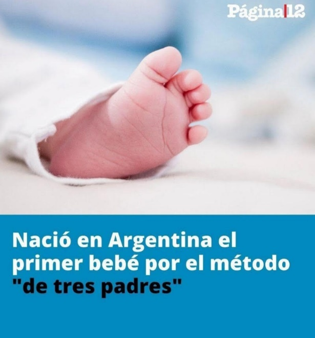
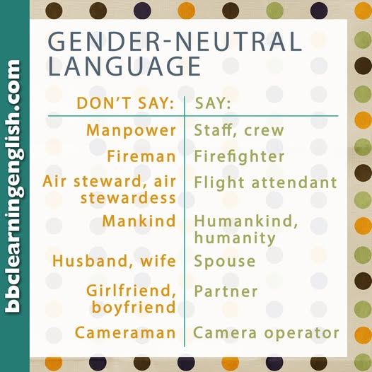
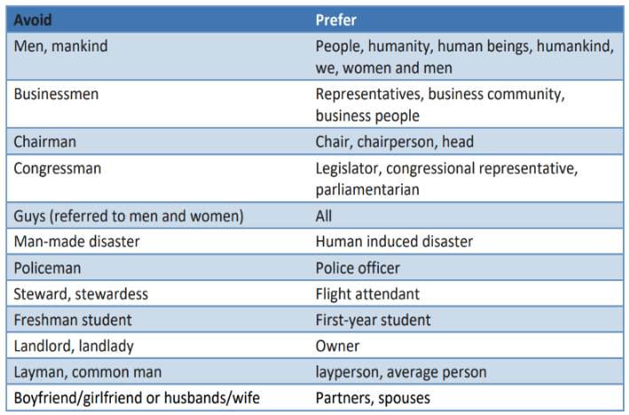

La discusión sobre el lenguaje inclusivo y si el masculino genérico incluye a todos se ha extendido no solo entre la comunidad LGBT, sino en todos los rincones de la sociedad. La primera mirada al respecto es la de las personas no binarias, que buscan una forma de manifestarse en el lenguaje sin asignar uno de los dos géneros (hombre y mujer). Por otro lado, se ha utilizado la “e” como terminación neutra de sustantivos y adjetivos, con el objetivo de no referirse o no mencionar solamente a hombres (con relación al masculino genérico). Los sectores más conservadores con respecto a la lengua han manifestado su desacuerdo desde el principio con esta nueva forma, al argumentar que el masculino en español es el género no marcado, es decir, el “neutro”.
Desde que la “e” comenzó a aparecer con mayor frecuencia, también comenzaron a hacerse visibles ciertos aspectos de la lengua que no muchas personas no tienen en cuenta. El disparador de esta investigación fue esta noticia:
Una mujer de 31 años dio a luz a una beba este jueves (...), gracias a un método de reproducción asistida que se conoce comúnmente como "bebé de tres padres", dado que requiere del material genético que aporta la madre, el óvulo de una mujer donante y el espermatozoide del padre.1

Al leer el título, se tiende a imaginar a tres hombres intentando reproducirse entre ellos, y en los comentarios de la noticia muchas personas decían lo mismo, que se trataba de tres o al menos dos hombres. Ciertos comentarios afirmaban que, aunque se tratase de nueve mujeres y un hombre, de igual forma le correspondería ser "el método de los diez padres”:
“Los sustantivos en plural padres (‘padre y madre’), reyes (‘rey y reina’), príncipes (‘príncipe y princesa’) y otros que designan títulos nobiliarios o términos de parentesco pueden abarcar en su designación a los dos miembros de una pareja de varón y mujer” .
(Nueva gramática de la lengua española, 2010, pág. 25).En este caso, el título sigue la regla de masculino genérico, ya que es el género no marcado. Sin embargo, la mayoría imaginó a los significantes incorrectos, ya que se trataba de dos mujeres. ¿Es posible que, en ciertos contextos, la regla impida que se transmita el mensaje correcto? ¿El error lo cometieron las personas al imaginar a tres hombres, o el título no es claro?
Por otro lado, el título dice "nació el primer bebé", aunque en realidad el significante sea una niña. Si el enunciado dijera "nació la primera bebé", se referiría a que ya habrían nacido niños y que ella es la primera niña, debido a que se habla de todo el modelo en su conjunto. Esto se menciona en Nueva gramática de la lengua española, el masculino es el género no marcado, y el femenino, el marcado. Cuando se designan personas o animales, los sustantivos de género masculino se emplean para referirse a los individuos de ese sexo, pero también para designar a toda la especie, sin distinción de sexos, sea en singular o en plural (2010, pág. 25). En español se expresa que el modelo predeterminado es el masculino, lo que deja al femenino como el género marcado: la diferencia.
“El fenómeno del salto semántico, definido y estudiado por Álvaro García Meseguer, se produce cuando, concediendo el beneficio de la duda, aceptamos que un masculino es genérico y, acto seguido, quien lo ha empleado revela que, en realidad, el referente oculto pero real de ese masculino excluía las mujeres. O sea, que no era genérico”. (Maldonado, 2023).
Muchos otros ejemplos de la vida diaria responden al uso genérico del masculino como no marcado:
- Ver el manual del usuario
- Servicio al cliente
- Consulte a su médico
- La figura del presidente
También se evidencia en algunos textos legales o contratos:
- El vendedor deberá... (contrato de locación)
- El cónyuge (acta de matrimonio)
- ...es hijo de... (partida de nacimiento)
- El que infringiere la ley... (manuales de teoría jurídica)
- Todo aquel que declare... (manuales de teoría jurídica)
Cuando escuchamos "debe consultar a su médico", es probable que la mayoría se imagine a un hombre o a alguien más, pero pocos se imaginarían a mujeres. Cuando escuchamos "un grupo de abogados", se podría imaginar a un grupo de hombres y otras personas que no son hombres, pero ¿remitimos a un grupo de 10 mujeres y un hombre?
Esta controversia se da de forma diferente en el idioma inglés. Los sustantivos de objetos inanimados no tienen género, es decir, son neutros, al igual que un gran número de sustantivos referentes a personas (por ejemplo, doctor, teacher, lawyer). Lo mismo sucede con los adjetivos: no tienen género, ni número, ya que son invariables.
Sin embargo, existen muchos sustantivos referentes a personas que sí tienen género, como se muestra en la siguiente publicación de Instagram de la BBC (@bbclearningenglish).

Es importante notar que el género de cada sustantivo responde a un rol social: aquellas profesiones relacionadas a la economía, la política y la logística llevan género masculino (businessman, cameraman, fireman). Estos sustantivos y sus profesiones surgieron en una realidad en la que se satisfacía una necesidad lingüística: solo los varones llevaban a cabo esos trabajos. No obstante, la realidad comunicativa actual es diferente, es decir que surgieron nuevas necesidades lingüísticas. Tanto varones como mujeres se desempeñan en esos roles, y para muchas personas podría resultar sesgado utilizar el sustantivo masculino.
De forma similar a la BBC, la ONU Mujeres también propuso sus recomendaciones sobre el lenguaje neutro en su documento Gender inclusive language:

A continuación, algunas otras propuestas propias en español:
- Si alguno tiene una duda…: Si alguien tiene una duda…
- Muchos creen que…: Mucha gente cree que…
- El que cometa un error…: Quien cometa un error…
- La función del director de la escuela es…: la función de la dirección de la escuela es…
- Los argentinos votan mañana: En Argentina se vota mañana/Argentina vota mañana.
- Los lectores del diario…: Quien lea este diario…
Con referencia al español, el género de los sustantivos funciona distinto. Casi todos los sustantivos tienen género, y no solo los referentes a seres animados, como sucede en inglés. La siguiente categorización del género es descripta en Español-inglés en clave contrastiva(Miranda, Regúnaga, & Suárez Cepeda, 2012, pág. 24) .
Las autoras continúan la explicación diferenciando ambos tipos de género. (2012, pág. 24).
Género lógico: la variación del género responde a la oposición biológica.
- sustantivos de género sexual o motivado: su género gramatical está motivado por la biología de los seres animados. Se puede marcar de varias formas, como el cambio de la vocal final (niño/a, gato/a, etc.), cambio de palabra (toro/vaca), o cambio en los determinantes (el deportista, la deportista).
- otras oposiciones: indica diferencias en tamaño, relación árbol-fruto y otras oposiciones.
- sustantivos de género común: son invariables, y el género se manifiesta mediante los artículos o adjetivos que los acompañan. Algunos ejemplos son los que terminan en -ente, -ista o -iatra. También se incluyen cónyuge, criminal, joven, testigo, etc.
Esto significa que las palabras por sí solas no son de hombre ni de mujer. "Deportista" es una persona, cuyo género es desconocido o no importante, que realiza deporte. "El deportista" se refiere a un hombre porque el lo determina. Si aún no hay determinantes, o si está en plural, se refiere a ambos: “Existe una nueva aplicación para deportistas”.
- sustantivos epicenos: son masculinos o femeninos, pero no tienen género motivado (víctima, criatura, etc.). De acuerdo con García Negroni en El arte de escribir bien en español, designan indistintamente a individuos de uno u otro sexo (2004, pág. 134). “Criatura" es una palabra femenina. Pero no se refiere solo a mujeres.
Género gramatical: la asignación es arbitraria. De acuerdo con la RAE, “el género de los sustantivos es una propiedad gramatical inherente, sin conexión con el sexo” (Nueva gramática de la lengua española, 2010, pág. 24).
Como se menciona al principio, el debate sobre el lenguaje inclusivo y el masculino genérico se extendió a todos los círculos sociales. Estos son algunos comentarios presentes en las redes sociales, principalmente Instagram y Facebook:
-
"Pero también hay palabras que terminan con 'a' o son solo femeninas, como persona, periodista o deidad, y hablan de hombres y mujeres" (comentario de un hilo de la red social X sobre el uso del lenguaje inclusivo).
"Persona" es un sustantivo epiceno, es decir que gramaticalmente es una palabra femenina, pero no se debe a una razón biológica. "Deidad" es un sustantivo, de nuevo, epiceno. "Periodista" es un sustantivo de género común.
Es importante entender que una palabra terminada en "a" no es intrínsicamente femenina. Existen también palabras que se considerarían masculinas por sus terminaciones (por ejemplo, perito, ídolo, peatón), pero no es así, porque son epicenas o de género común.
-
"No es presidenta, es presidente, porque viene de un verbo y es incorrecto. Si no, yo también tendría que cambiar de deportista a deportisto" (comentario en una noticia que incluía la palabra presidenta en el título).
La Real Academia Española incorporó la palabra presidenta en el diccionario en 1803, y está en circulación desde el siglo XV. Sin embargo, nombrar a la palabra en femenino es una decisión de varios movimientos sociales, que se atribuye a la ausencia, durante nuestra historia, de presidentas, ministras, árbitras, etc.; y es una realidad que continúa en el presente.
Sin embargo, no es la primera vez que los usuarios de la lengua toman esta decisión. La mayoría de las personas tendrá en su vocabulario la palabra sirvienta, que responde al mismo caso. Otro ejemplo es el caso de modisto, que nace en uno de los pocos ámbitos en los que solo había mujeres:
“La palabra modisto es una excepción, pues las modistas eran mujeres que hacían ropa de mujer a la moda. Los varones, que hacían todo tipo de ropa, se llamaban “sastres”. Así, un modisto no es un sastre cualquiera, sino uno que se dedica a confeccionar ropa de mujer de moda”.2
Estos ejemplos demuestran que un idioma se puede cambiar según lo que los usuarios necesiten expresar o representar.
-
"El lenguaje inclusivo no existe, es algo inventado. Están deformando la lengua española" (comentario sobre una imagen que decía todes).
La realidad es que todas las palabras son inventadas. Esta idea se puede relacionar con lo expuesto por Ferdinand de Saussure en Curso de lingüística general:
“Todo medio de expresión aceptado en una sociedad descansa en principio sobre una costumbre colectiva o sobre la convención, lo cual es lo mismo […] No dejan de estar fijados por una regla; es esa regla la que obliga a emplearlos, no su valor intrínseco […] queremos decir que es inmotivado, es decir arbitrario en relación al significado, con el que no tiene ningún vinculo natural en la realidad (1991, págs. 105-106).
Las palabras, en este caso, los signos lingüísticos, son “inventados”: sostenidos por el uso colectivo. No hay una razón por la que una palabra nombre a un objeto o a una persona (es decir, un significante). Por lo tanto, los idiomas no se deforman: se transforman. Las convenciones y costumbres colectivas que lo sostienen se modifican, y el lenguaje inclusivo lo ejemplifica. Aquello no implica, sin embargo, que sea una obligación utilizarlo, sino que es solo una opción más a las que se puede recurrir para no marcar el género.
Puede parecer pequeño, pero cambiar el lenguaje inserta a las mujeres y a las identidades minoritarias en el imaginario social, y ayuda a modificar la idea subyacente de que lo masculino es el modelo humano estándar. Existen muchos recursos en ambos idiomas para lograrlo.
A partir de los casos mencionados, es importante preguntar ¿qué palabras censuramos? ¿Cuándo es adecuado adoptar un enfoque prescriptivista o descriptivista de la lengua? Como futuros profesionales, es esencial reconocer los cambios que sufre el idioma y ampliar nuestro conocimiento sobre ellos.
Bibliografía
- Di Tullio, Á. (2005). Manual de gramática del español. Buenos Aires: Waldhuter.
- García Negroni, M. M., Pérgola, L., & Stern, M. (2004). El arte de escribir bien en español. Buenos Aires: Santiago Arcos.
- Maldonado, T. (23 de noviembre de 2023). La famosa cita… ¿de Steiner? Obtenido de Viento Sur: https://vientosur.info/la-famosa-cita-de-steiner/
- Miranda, L., Regúnaga, M. A., & Suárez Cepeda, S. G. (2012). Español-inglés en clave contrastiva. Santa Rosa, La Pampa, Argentina: UNLPam.
- ONU Mujeres. (s.f.). Gender-inclusive language guidelines. Obtenido de https://www.unwomen.org/sites/default/files/Headquarters/Attachments/Sections/Library/Gender-inclusive%20language/Guidelines-on-gender-inclusive-language-en.pdf
- Real Academia Española. (2010). Nueva gramática de la lengua española. Madrid: Espasa. Obtenido de https://ifdcvm-slu.infd.edu.ar/sitio/gramatica-espanola/upload/RAEManualdelaNuevaGramaticadelaLenguaEspanola.pdf
- Saussure, F. d. (1991). Curso de lingüística general. (A. S. Charles Bally, Ed., & M. Armiño, Trad.) Madrid: Akal.
Sobre la autora
Florencia Rivas Ambesi es traductora pública por la Universidad Nacional de Lanús. Se graduó de la carrera de Interpretariado de Conferencias en Inglés en la Universidad del Museo Social Argentino. Realiza prácticas de interpretación consecutiva y simultánea en dicha universidad. Realizó también prácticas de subtitulado. Traduce artículos de blogs turísticos para páginas web. Cursa estudios de nivel intermedio en idioma francés. Da clases de inglés en institutos y a estudiantes de diferentes carreras, nacionalidades y lenguas. Trabaja para Cambridge Assessment en la administración de exámenes internacionales.